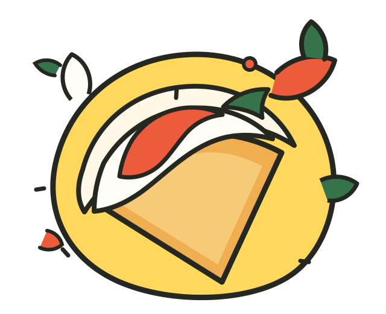

こんにゃくを知ってもらう。
こんにゃくの良さを伝え、新しい食べ方を提案することを通じて、農家の方の支援につなげたいと考えています。
群馬が誇るこんにゃくに、いつもとちがう出番を。樹徳高校2SS1班が、こんにゃく粉入りクレープづくりに挑戦しています。

群馬からOUR MISSION · 私たちの探究
群馬の名産・こんにゃくを使って農家の方を間接的に支援し、群馬を盛り上げたい。そんな思いから、私たちの探究が始まりました。
こんにゃくの良さを伝え、新しい食べ方を提案することを通じて、農家の方の支援につなげたいと考えています。
こんにゃく粉をクレープ生地に混ぜて、風味と食感を実験。5%または10%が、もちもちでおいしいという結果になりました。
WHAT WE DID · 活動記録
クレープ生地にこんにゃく粉を加えて、味や食感がどう変わるのかを比べました。
PHASE 0 · 配合実験こんにゃくを使って農家の方を間接的に支援し、群馬を盛り上げるテーマを発表しました。
0・5・10・15・20・100%の6段階を比較。5%または10%が、こんにゃくの匂いもなく、もちもちでおいしいという結果になりました。
クレープ店での販売に向けて準備中です。SNSでの発信も予定しています。販売日など、決まり次第お知らせします。
最終更新：2026年10月
HAVE A BITE? · お客さまへ
お客さまの声を、これからの商品づくりに活かします。